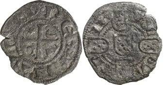
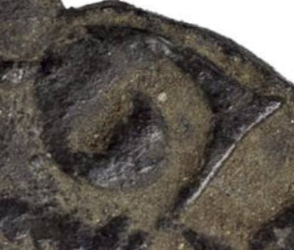
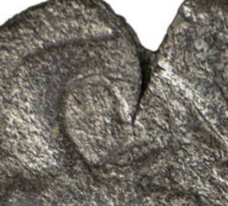
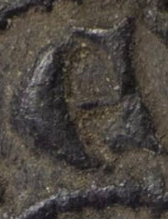
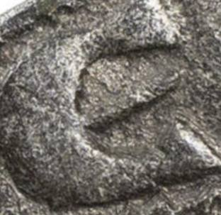
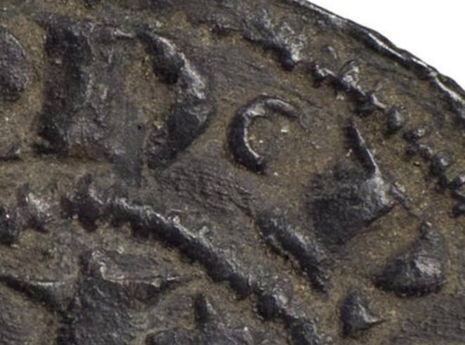
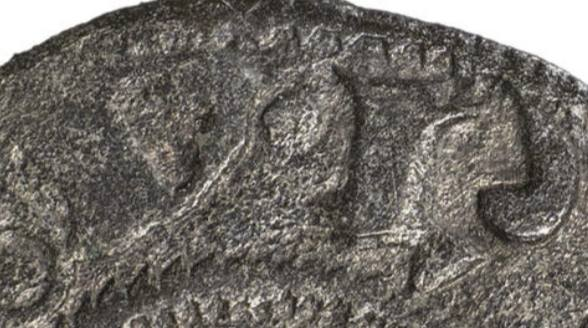

Dei com 2 lotes de dinheiros de D. Dinis, naquela casa leiloeira de Vila Nova de Gaia que está a ser investigada pela Polícia Judiciária, classificados como tendo "letra de tornês". A investigação nada tem a ver com a desobediência à legis artis por parte dos apregoados "especialistas" da dita casa, mas a verdade é que resulta da mera observação que estes dois dinheiros tiveram cunhos abertos por pessoas diferentes, ou ao menos por ferramentas diferentes. Talvez fizesse mais sentido que os apregoados especialistas lançassem as suas obras. Para se lhes compreender a especialidade.
#Táquietoqueissodámuitotrabalho